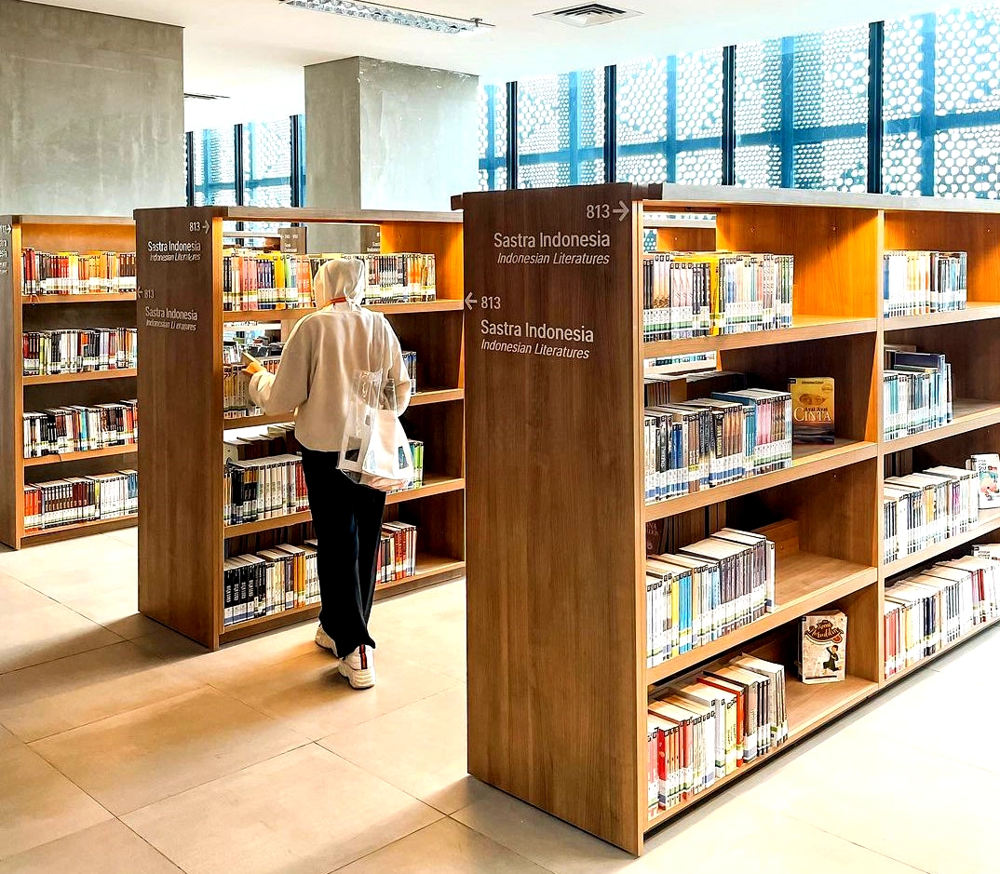
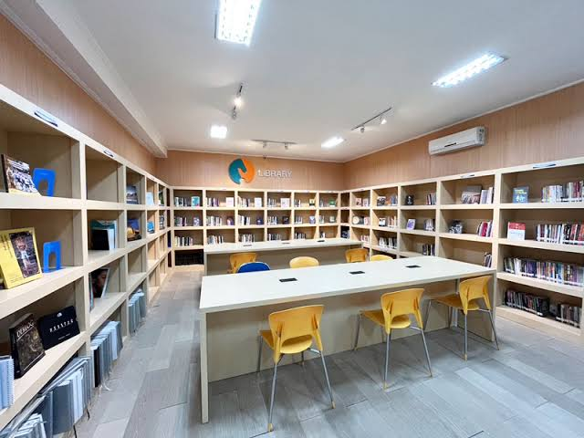

LibraryReg
Website pendaftaran anggota perpustakaan kampus. Daftar dari mana saja, tanpa antri di meja layanan.
Daftar jadi anggota Lihat anggota
Tentang LibraryReg

LibraryReg adalah website yang menyediakan layanan pendaftaran anggota perpustakaan secara online untuk kampus.
Semoga informasi di sini memberi gambaran yang jelas tentang layanan dan fasilitas kami, sehingga Anda tertarik menjadi anggota.
Layanan dan fasilitas
Peminjaman buku
Koleksi lengkap untuk semua program studi, pinjam hingga 14 hari.
Jurnal digital
Jurnal dan e-book bisa diakses dari kampus maupun dari rumah.
Ruang baca dan diskusi
Ruang baca nyaman ber-AC dan ruang kelompok yang bisa dipesan.
Wi-Fi dan komputer
Internet cepat dan komputer umum di setiap lantai.
1.000
koleksi buku
100
judul jurnal
3
anggota